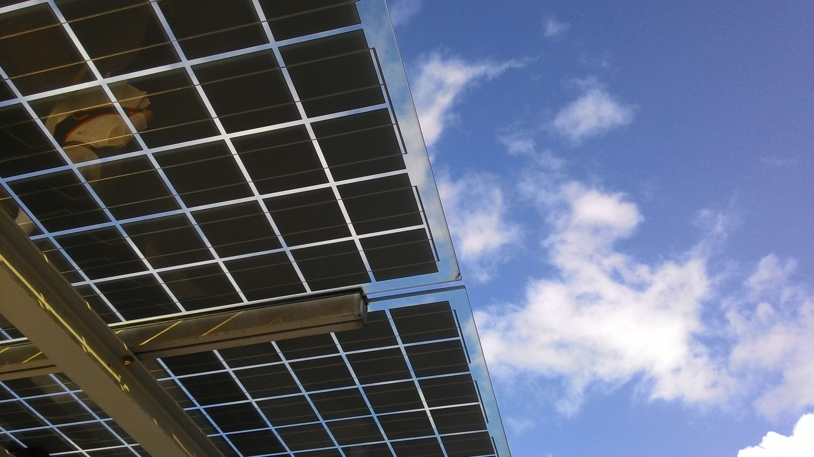

A solar monitoring system works through the solar system’s inverter. In most cases, companies sell their inverters with a patented, built-in monitoring software setup. The monitoring system works in a straightforward manner.
 In the process of converting DC (direct current) from the panels to an AC (alternating current) by the inverter, the system collects data about production and power levels. The information is then sent to a cloud-based monitoring system and its related apps. You can then access this information either using your mobile apps, or your paired smart home gadgets. Also, there are some monitoring systems which offer on-site monitoring. Instead of the data being sent to a cloud-based system, it is sent to an installed monitoring device on your property.